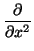
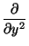
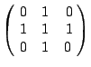
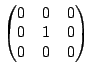

Next: Summary
Up: An application to Image
Previous: Gaussian Blur
Contents
Index
We give one more example of why (linear) digital filtering,
implemented via the FTT may be of interest. This involves the
Laplacian filter given by the mask


.
This is the digital analogue of the negative Laplacian operator, ie
-  + 

.
f (y, x + x) - f (y, x) - f (y, x) - f (y, x - x).
Adding two orthogonal such approximations gives the mask shown. An
example of the output of the Laplacian filter is given in
Fig. 6.4.
Figure 6.4:
Output of Laplacian filter.
|
|
Figure 6.5:
Output of sharpening filter.
|
|
There is another interpretation of the operator, which although
completely unjustifiable, may indicate why the output from the
Laplacian gives a ``sharpened'' version of the original image. We
have seen above how to create an image
blur(f ) from f,
using, for example, the mask
.
It can thus be argued that
(f - blur(f )) defines a function
called, perhaps
sharp(f ). But
sharp(f ) has mask
 -
,
Subsections
Next: Summary
Up: An application to Image
Previous: Gaussian Blur
Contents
Index
Ian Craw
2001-04-27
![\includegraphics [width=0.5\textwidth]{susie-laplace.eps}](img372.gif)